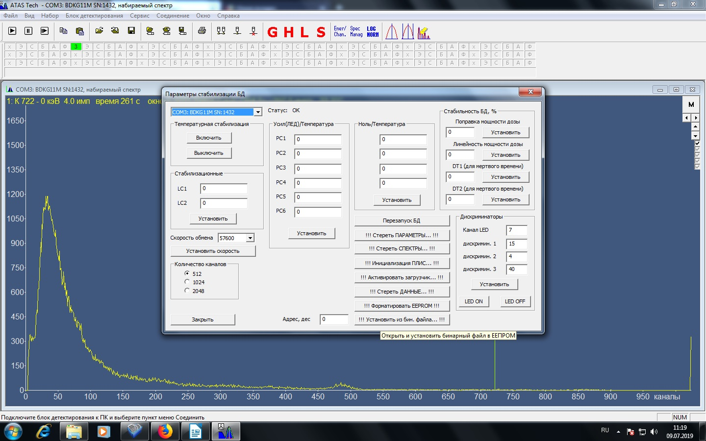
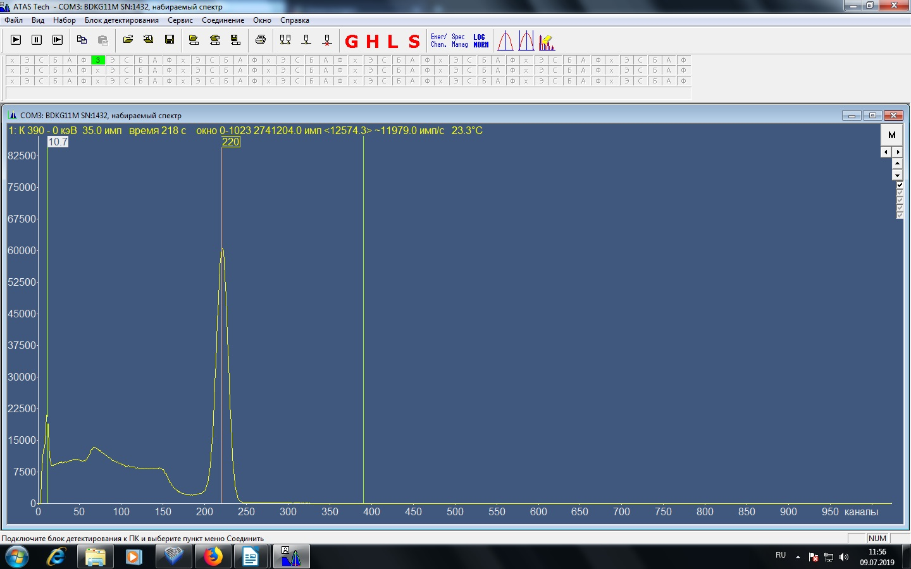
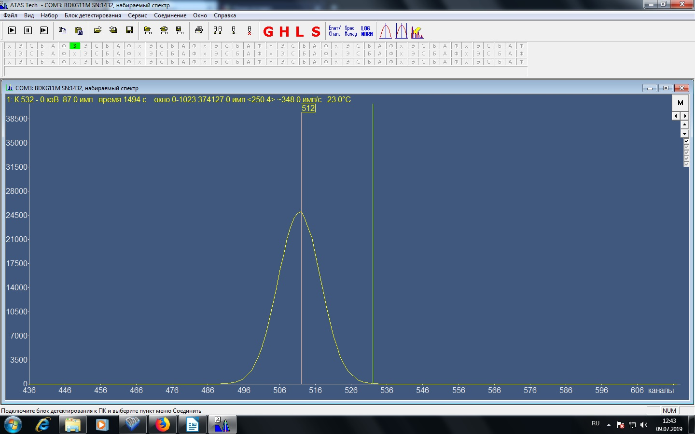
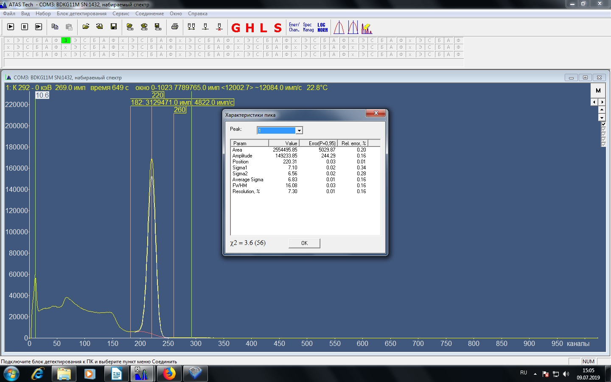

БДКГ-11М. Настройка
- В перечень записать дату настройки, серийный номер и ФИО регулировщика, наклеить на прибор наклейку с
номером.
- Записать внутренние номера и дату :
- Подключить БД к адаптеру USB
- Запустить программу BackgroundCalibration. Дозиметр подключится автоматически
- Нажать "Запись идентификационных данных"
- Записать серийный номер, месяц и год производства
- Проверить прошивку, при необходимости перепрошить.
- Запустить программу ATAS:
- Выбрать Блок детектирования - Параметры стабилизации
- Установить канал LED — 7
- Установить дискриминаторы — 15, 5, 40
Третий дискриминатор (который 40) на время настройки установить 10

- подтвердить установку
- Выключить светодиод (нажать LED OFF)
- Установить пороги: Выбрать Блок детектирования — Пороги : нижний порог 1100, верхний 850
- Выставить высокое: Выбрать Блок детектирования — Высокое 11500
- Настроить правый пик в 220 канал по
137Cs с активностью 105 Бк: грубая подстройка - R44 R46, точная подстройка: Блок детектирования —
Высокое в диапазоне от 10500 до 12000

Настроить левый пик в 10,7 канал при помощи верхнего порога
При наличии дополнительного пика до 10 канала его нужно сгладить при помощи нижнего порога.
- Выставить 512 канал по светодиоду (без 137Cs): Выбрать Блок детектирования - Параметры
стабилизации (нажать
LED ON)

- Грубая настройка R17, точная настройка: Блок детектирования — Усиление 1100+/- 100
Проверить задающее напряжение светодиода на выходе микросхемы D1.6 , должно быть 1,1 — 1,8 В. Можно
подрегулировать : Выбрать Блок детектирования - Параметры стабилизации - дискриминаторы — канал LED.
- Включить светодиодную стабилизацию: Выбрать Блок детектирования — Высокое — отнять 8000 от настроенного
высокого и внести результат
- Перепроверить пики. Если пики ушли, скорректировать их при помощи усиления. Если нужно подправить только
левый пик , подправить его верхним порогом.
- Снять разрешение: навести курсором на 220 канал, нажать и удерживать клавишу Ctrl и одновременно левую
клавишу мыши — появится маркер. Так же поставить маркеры на 180 и 260 каналы.
Далее нажать правой клавишей мыши по спектру, выбрать аппроксимация пиков…, аппроксимация пика по трём
маркерам, Ок, в строке Resolution отображается разрешение , оно должно быть не более 8%

- Сохранить набираемый спектр по 137Cs: Файл — Сохранить — Сохранить.
- Настроить спектр по Торию (Th) выставить 865 канал +/- 5 каналов резистором R33 (300 кОм максимальное
значение).
- Сохранить набираемый спектр по Торию
- Проверить Uвысокое на С49 должно быть не более 90В.
- Записать данные в таблицу.
- Поставить на приработку